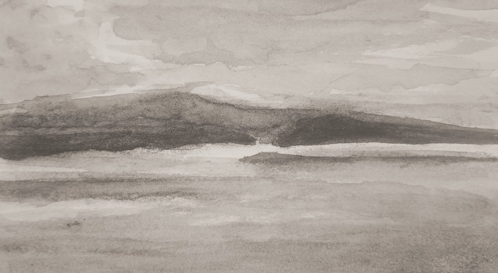
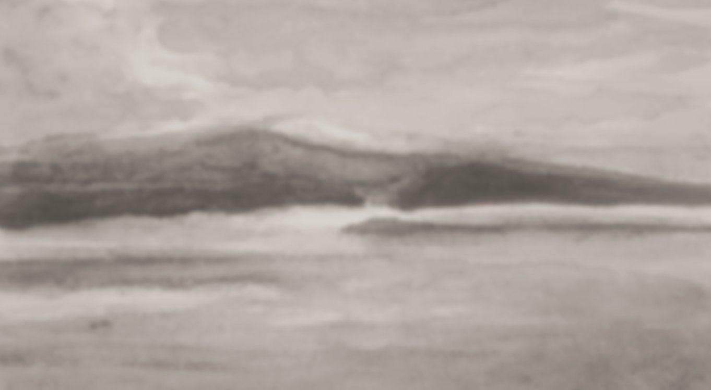
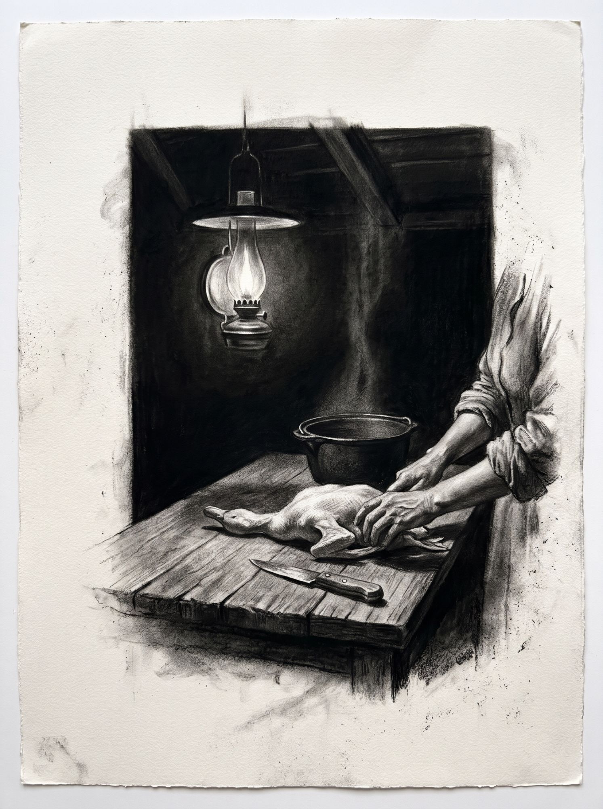
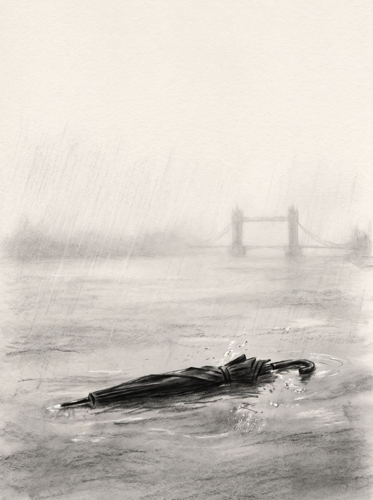

Augusto Tomba
[ palavra · palavra · palavra ]
substituir pela imagem/vídeo final ]
Augusto Tomba
Augusto Tomba vive em São Paulo. Desenvolve projetos pictóricos em carvão, têmpera de ovo e óleo quando não está escrevendo ficção. Seus trabalhos partem do que é comum e daquilo que o compõe.
Antes do traço ou da palavra, a dissolução.
Esboçar o rio exige a humildade da pele molhada.
Navego entre a literatura e as artes pictóricas. Bebi de fontes diversas e distantes, da iconografia bizantina à ilustração científica, da caligrafia oriental ao surrealismo.
Na escrita, cultivo um realismo do absurdo.
Dessa síntese, busco equilíbrio na memória e entendimento no improvável.
A Ferida como Forma
I. O ponto
Punctum, diz Barthes: o detalhe mínimo que fere antes de qualquer interpretação. Para perturbar, um ponto basta.
II. A origem
A dor continua dor, o corte continua corte. Muda a matéria, mas ela guarda a origem. A carbonização transforma a madeira, o osso e o caroço sem apagar o que foram. Na origem existe uma memória.
III. Pintura e escrita
Pinto o traço, a mancha, a fenda que concentra o impacto. Escrevo a palavra que corta. Elimino o que não fura. Não explico nem consolo. Deixo as lacunas para quem olha ou lê, e a ferida permanece como marca.
Um figo partido sobre madeira antiga. O fruto apenas permanece. Nenhuma elevação.
Escritos
Contos de Augusto Tomba. O texto completo chega em PDF para quem assina a newsletter.

O Virado
A casa dorme, mas a cozinha ainda ferve.
conhecer o conto →
Uma Picada
Porque ninguém desconfiaria de um guarda-chuva.
conhecer o conto →livros · em preparação
Coleções
Primitivo Onipresente
Desenhos em carvão sobre papel de aquarela. Naturezas mortas em que a sombra escava a forma. Figos, anis-estrelados, um gravatá, ferramentas antigas, uma mesa de madeira bicentenária. O que parece cotidiano guarda uma origem, e o carvão a torna visível.
Primitivo Onipresente reúne naturezas mortas em carvão sobre papel de aquarela.
Os figos partidos ao meio, o punhado de anis-estrelado, a sombra do gravatá, as flores miúdas trazidas dos cabelos de Évora. Cada objeto guarda uma origem comum. Um quintal, uma cozinha, uma infância rural.
A mesa que sustenta as composições também é parte da obra. Feita de madeira maciça, bicentenária. Talhada pela força das mãos. Sobre ela, os objetos se dispõem como se sempre tivessem pertencido ali. A mesa carrega o peso do que não foi dito.
O carvão, feito de madeira e fogo, não apenas desenha. Ele escava. Em algumas obras, o papel recebe uma primeira camada de laca indiana, escura e silenciosa, anterior ao gesto, ela tonifica a cena e adiciona drama.
[ Próxima coleção ]
[ Título, descrição e obras a definir. ]
Nigretura
Dossiê de síntese da técnica
Nigretura é uma técnica de pintura com tinta feita da carbonização de matéria orgânica. Caroços de jerivá, ossos, cortiça e madeiras claras são reduzidos a carvão, suspensos em água destilada e aplicados com pincéis orientais sobre papel washi, em gesto caligráfico. O resultado é monocromático, com variações de transparência e granulação.
- Nome
- O termo combina nigr-, do latim niger e do estágio do nigredo, e o sufixo -tura, presente em pintura e escritura. Nigretura nomeia a técnica e a obra que dela resulta, como aquarela nomeia a técnica e os grafismos resultantes.
- Nota do artista
- A pesquisa começou em 2015, com variadas fontes de carvão, testes de formulações de tinta, papéis e pincéis. Cada lote de tinta carrega a origem da matéria que o produziu.
- Relação com a tradição
- Das aguadas de bistre dos mestres antigos, a nigretura herda a transparência e a modulação da sombra. Do preto de lamparina, herda a origem na fuligem, mas não o caráter industrial: o pigmento é colhido de matérias específicas. Do sumi-e, herda o gesto caligráfico sobre papel washi, mas sua tinta tem origem material própria.
- Processo técnico
-
- Matéria-primacaroços de jerivá, ossos, cortiça e madeiras claras.
- Transformaçãoa matéria é reduzida a carvão e suspensa em água destilada, com eventual adição de fel de boi.
- Aplicaçãopincéis orientais sobre papel washi, em gesto caligráfico que controla a diluição tonal e admite camadas sobrepostas.
- Resultadografismos monocromáticos, com variações de transparência e eventual granulação.
- Diferenciação
- Em relação ao desenho a carvão, a nigretura usa tinta líquida, não bastão nem pó seco. Em relação à aquarela, é monocromática. A tinta é sempre líquida e sem adição de goma arábica. Em relação ao sumi-e, tem origem material própria: cada lote de tinta depende da matéria que o produziu.